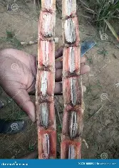
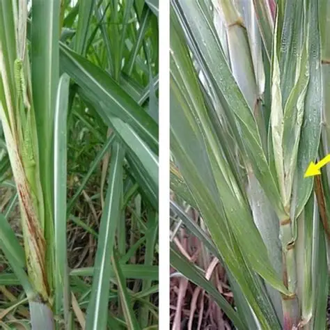
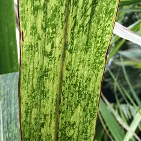
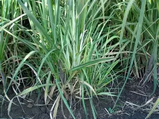
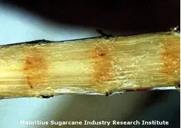
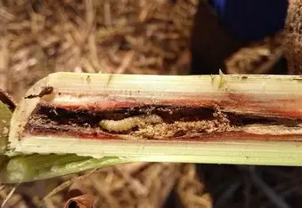

🌿 Diseases & Pests
Grand Growth Stage (4–7 Months After Planting)

Red colour inside cane with white patches. Leaves turn orange → yellow → dry. Alcohol smell.
ControlUse disease-free setts. Remove infected clumps. Avoid ratoon in infected field.

Black whip-like structure from top. Thin weak tillers. Reduced cane growth.
ControlPlant healthy setts. Remove & burn infected whips. Grow resistant varieties.

Yellowing & drying of leaves. Hollow stalk with reddish colour. Plant dries slowly.
ControlAvoid wilt-sick soil. Remove infected stubbles. Use healthy planting material.

Yellow patches on leaves. Leaves twist & wrinkle. Top rot in severe cases.
ControlRemove infected tops. Maintain field sanitation. Spray recommended fungicide.

Yellow & green stripes on leaves. Stunted plant growth. Weak stalk formation.
ControlUse virus-free setts. Control aphids. Remove infected plants.

Many thin grassy tillers. Pale yellow leaves. No proper cane formation.
ControlUse disease-free setts. Remove infected clumps. Hot water treatment of setts.

Stunted plant height. Thin stalks. Poor tiller formation.
ControlUse clean seed cane. Sterilize cutting tools. Avoid infected ratoon crop.

White streaks on leaves. Yellow leaf margins. Leaf drying in severe cases.
ControlUse disease-free material. Remove infected plants. Grow resistant varieties.

Dead heart in young plants. Bore holes with frass. Bunchy top in mature cane.
ControlUse resistant varieties. Release Trichogramma. Apply recommended insecticide.